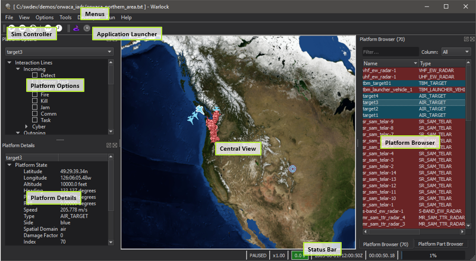

Warlock Reference Guide¶
The Warlock Reference Guide lists the features included within Warlock organized into various categories.
Start-up¶
Application Layout¶
This image above shows the layout of Warlock with the major components labeled.
Many of these components are dockable and may be moved to other locations in the window, or into their own ‘floating’ windows.
Menus
Dialogs, Views and Toolbars¶
Most of the Dialogs and Toolbars can be accessed through the View menu. A few are accessed through the Context menu.
Application Configuration¶
The following items control the appearance of Warlock.
Platforms¶
The following items describe interactions with Platforms not mentioned in the above sections.
Plug-in Features¶
The following is a comprehensive list of functionality provided by Warlock extensions.
- ACES Display - Warlock
- Air Combat Visualization - Warlock
- Application Launcher - Warlock
- Astrolabe - Warlock
- Battle Management - Warlock
- Chat - Warlock
- Comms Visualization Tool - Warlock
- Comment - Warlock
- Coverage Overlay - Warlock
- Create Platform - Warlock
- Cursor Info - Warlock
- Cyber Engagement Browser - Warlock
- Cyber Engagement Controller - Warlock
- Demo Mode - Warlock
- Dialog Builder - Warlock
- Event Marker - Warlock
- Head Down View - Warlock
- Head Up View - Warlock
- Interactions - Warlock
- Joystick - Warlock
- Map Annotation - Warlock
- Map Display - Warlock
- Map Hover Information - Warlock
- Map Toolbar - Warlock
- Model Viewer - Warlock
- Network Browser - Warlock
- Network Log - Warlock
- Orbital Data - Warlock
- Orbits - Warlock
- P6Dof Controller - Warlock
- P6Dof Data - Warlock
- P6Dof Tuner - Warlock
- Performance - Warlock
- Platform Browser - Warlock
- Platform Details - Warlock
- Platform History - Warlock
- Platform Movement - Warlock
- Platform Part Browser - Warlock
- Position Converter Tool - Warlock
- Projector - Warlock
- Relative Geometry - Warlock
- Route Browser - Warlock
- SA Display - Warlock
- Satellite Tether View - Warlock
- Scoreboard - Warlock
- Script Browser - Warlock
- Sensor Controller - Warlock
- Sensor Volumes - Warlock
- Simulation Controller - Warlock
- Simulation Logs - Warlock
- SixDof Data - Warlock
- SixDOF Tuner - Warlock
- Task Assigner - Warlock
- Task Status - Warlock
- Terrain Tools - Warlock
- Tether View - Warlock
- Track Details Display - Warlock
- Tracks - Warlock
- Unit Converter Tool - Warlock
- Video Capture - Warlock
- Visibility - Warlock
- Visual Effects - Warlock
- Weapon Browser - Warlock
- WSF Draw - Warlock
- WsfPrompt - Warlock
- Zone Browser - Warlock
Demos¶
The following demos are provided to demonstrate a variety of Warlock capabilities.